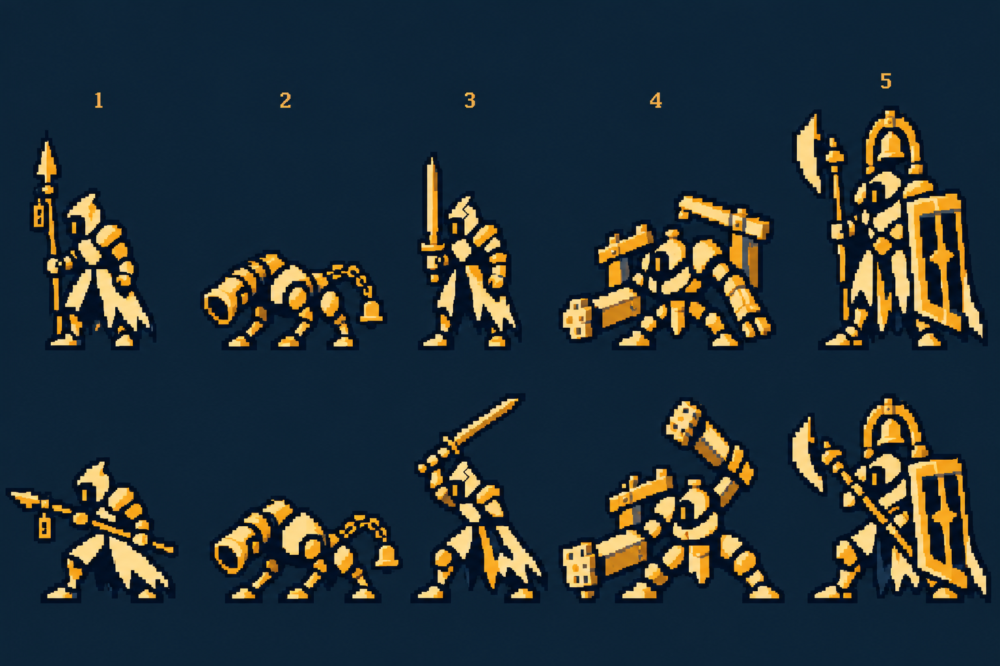
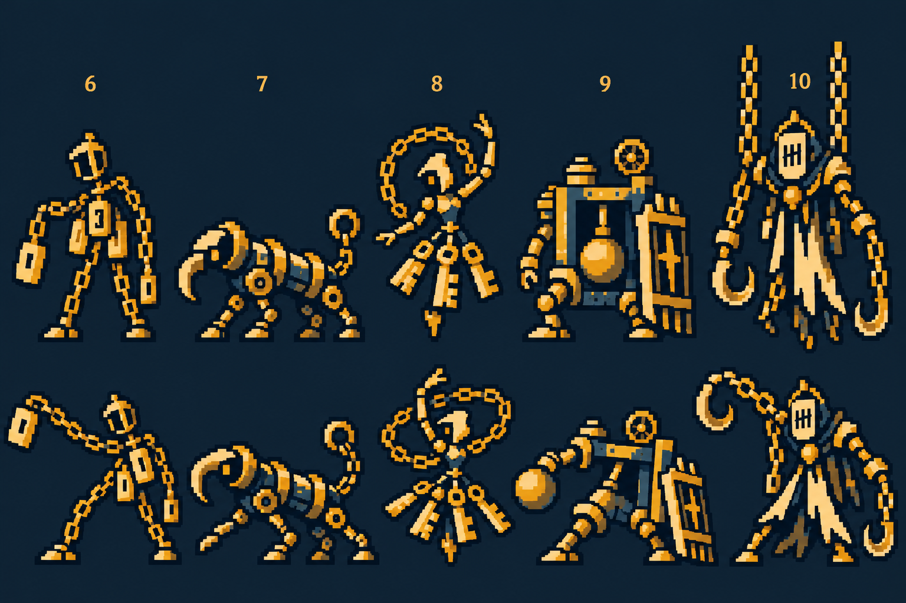
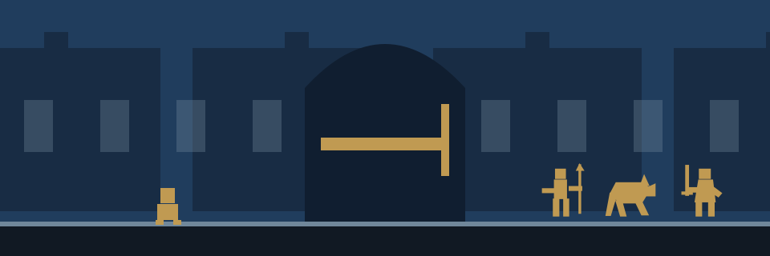
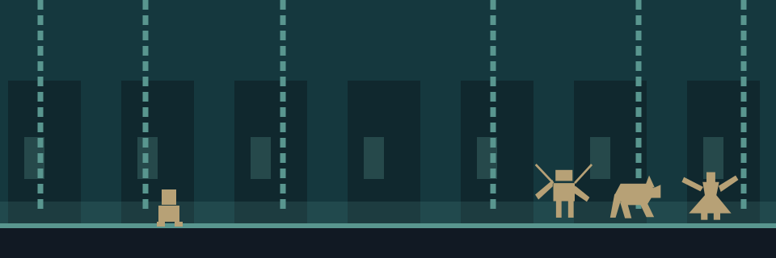
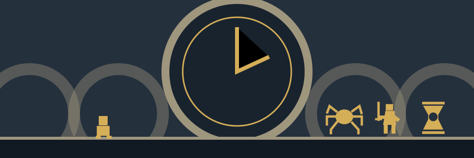
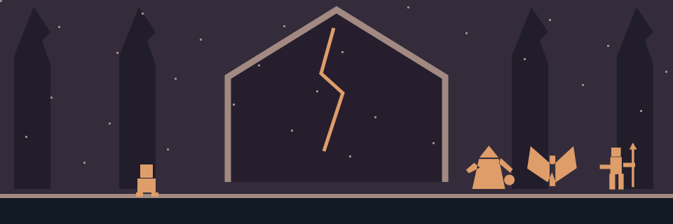
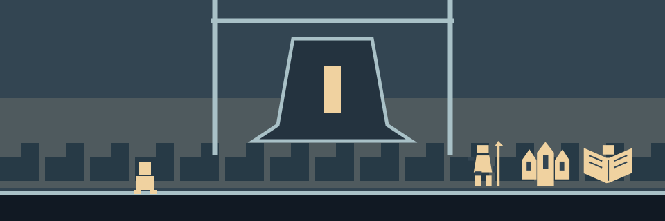

확인 한 번으로 완료
확인 버튼 한 번이 완료 조건이다. 종 개수 문제, 자동 시연, 의무 회피 연습, 두 타 성공 판정은 없다.
패널이 떠 있는 동안 적 AI·예고·파동·전투 시계·쿨타임·피해 판정을 멈춘다. 방향키와 공격 입력도 받지 않는다.
꺼진 등불에 불씨를 나누고, 잠든 종을 울린다. 작은 종지기가 지나간 길을 따라 마을의 아침이 돌아온다.
밤이 끝나지 않는 마을. 온은 성문 밖 등불에 남은 불씨를 이어 받아 종탑으로 향한다. 다섯 종을 깨우고 꺼진 등불을 밝히면 아침이 돌아온다고 믿는다. 종을 하나씩 울릴 때마다 길과 마을에 빛이 돌아오지만, 동시에 탑이 주민들의 시간을 빼앗아 왔다는 사실도 드러난다. 온은 마지막까지 종을 깨우는 일을 계속한다. 그 울림을 통해 빼앗긴 시간을 주민에게 돌려주기 위해서다.
프롤로그 · 스테이지 동선 · 5스테이지 안내 미리보기 열기 →
프롤로그 재생, 9 → 10 성문 등장, 중앙 안내 패널에서 확인 후 전투 재개를 확인할 수 있습니다.
| 구간 | 공간과 진행 |
|---|---|
| 1–9 | 성문으로 가는 외곽 길. 성문 자체는 보이지 않고 돌길·초소·검문소를 지나간다. |
| 10 | 9 → 10 이동 때 바닥 위 성문이 오른쪽에서 등장한다. 가디언 처치 → 첫 종 → 등불 점등 → 성문 개방. 현재 프로토타입은 여기서 결과 화면. |
| 11 · 확장 | 문을 통과한 직후. 성문의 안쪽 면이 왼쪽에 보이고 오른쪽으로 주거구가 이어진다. |
| 12 이후 · 확장 | 성문이 왼쪽 화면 밖으로 사라진다. 집·문패·배수로·사슬이 주거구의 배경을 이룬다. |
새 저장의 첫 게임 시작에 한 번 자동 재생한다. 끝까지 읽거나 건너뛰면 prologueSeen을 저장하고 Stage 1로 들어간다. 사망 후 다시하기와 로비 재출전에는 반복하지 않는다. 다시 보기는 별도 제공한다.
01그 마을의 아침은
종소리와 함께 찾아왔다.
02종이 울리면 등불이 켜지고,
사람들은 하루를 시작했다.
03그러나 마지막 종소리가 멎은 밤,
아침은 돌아오지 않았다.
04사람들은 어둠 속에 잠들고,
등불은 하나씩 빛을 잃었다.
05성문 밖,
아직 꺼지지 않은 등불 하나.
06작은 종지기는
그 안에 남은 불씨를 이어 받았다.
07꺼진 등불을 밝히고,
잠든 다섯 종을 깨우기 위해.
08마지막 종이 울릴 때,
이 마을에 다시 아침이 오도록.
28초 동안 아래에서 위로 자동 스크롤합니다. 일시정지·건너뛰기를 제공하고, 움직임 줄이기에서는 정지 문단으로 읽습니다. 전투 시계는 프롤로그 종료 후 시작합니다.
현재 저장에서 최초 Stage 5 도착, 적 배치 후 첫 공격 예고 직전.
적들은 가끔 연속 공격을 합니다.
종의 개수를 살피세요!
확인
| 단계 | 플레이어 경험 |
|---|---|
| 1. 안내 | 화면 중앙 패널: “적들은 가끔 연속 공격을 합니다. 종의 개수를 살피세요!” |
| 2. 확인 | 확인을 누르면 패널을 닫고 즉시 Stage 5 일반 전투를 시작한다. |
확인 버튼 한 번이 완료 조건이다. 종 개수 문제, 자동 시연, 의무 회피 연습, 두 타 성공 판정은 없다.
패널이 떠 있는 동안 적 AI·예고·파동·전투 시계·쿨타임·피해 판정을 멈춘다. 방향키와 공격 입력도 받지 않는다.
확인 즉시 패널을 닫고 정상 전투의 첫 예고부터 시작한다. 별도 시작/계속 버튼 없이 단발과 연속 공격이 기존 전투 규칙으로 진행된다. HP·적 HP·재화는 안내 전 그대로다.
확인 전에 종료하면 완료를 기록하지 않는다. 이후 처음 Stage 5에 도달했을 때 다시 안내한다. 확인한 저장은 재도전에서 다시 표시하지 않는다.
1~4의 단발 네 방향 배치는 유지한다. 5 이후에는 단발과 연속 공격을 섞어 만난다. 세부 출현 비율은 이후 전투 밸런스에서 확정한다.
전투 박자는 유지한다. 예고당 0/240/480ms, 단발은 720ms 타격. 2연타 예시는 하단 0/240/480 → 상단 720/960/1200 → 타격 1440/1920ms. 모든 예고 후 순서대로 공격.
comboHintSeen (저장 단위). 확인을 누르는 시점에 true로 기록한다. 캐릭터별로 반복하지 않는다.
미리보기는 확인 후 2연타와 단발 흐름을 번갈아 보여준다. 실제 HP·보상·게임 저장에는 접근하지 않는다. 실패해도 패널이 다시 뜨거나 연습으로 돌아가지 않는다.
현재 게임의 짙은 남색 외곽과 크림색·금색 면을 기준으로 큰 도트 덩어리를 사용한다. 무기·체형·종·문패·열쇠 등 기존 10종 콘셉트를 유지하고 잔장식과 금속 질감을 줄인다.


기존 게임 그림을 참조한 리디자인 콘셉트 시트. 완성 스프라이트·프레임 애니메이션은 아니다. 도트 정리와 팔레트 통일, 분리·리깅은 제작 단계에서 진행한다.
불씨를 들고 어두운 길을 지난다 → 길을 막는 수호자를 쓰러뜨린다 → 봉인된 종을 깨워 울린다 → 등불이 켜지고 다음 길이 드러난다.
초반에는 길을 밝히는 일이었다. 후반에는 등불 하나하나가 시간을 돌려받을 사람의 집과 연결돼 있음을 안다. 행동은 같고, 그 행동의 의미가 깊어진다.
구역의 큰 종은 빛과 시간의 흐름을 다시 여는 중심이다. 10단위 보스를 쓰러뜨린 뒤 종을 울리는 장면으로 그 구역을 마무리한다.
등불은 플레이어가 되찾은 길의 흔적이다. 전장 곳곳에서 빛이 돌아오는 작은 변화를 보여주고, 구역의 종이 울릴 때 주변 등불들이 이어서 켜진다.
플레이어가 밝혀온 등불은 실제로 마을을 되살리는 과정이다. 반전 뒤에 그 행동이 주민을 해친 일이었다고 뒤집지 않는다.
v1의 인물·사건·반전을 유지하고 시작 장면과 종·등불의 연결을 보강한다. 이번에는 성문 밖→주거구 동선, 자동 스크롤 프롤로그, 최초 Stage 5 중앙 안내 패널, 1~20 적 외형과 배치를 구체화한다. 스승과 제자 관계, 왕녀의 장례, 스승 한 사람을 돌려받는 거래는 채택하지 않는다.
| 기존 표현 | 더 분명하게 정리한 내용 |
|---|---|
| 불씨를 들고 종탑에 들어선다. | 첫 화면에서 등불·손안의 불씨·멀리 보이는 종을 연결해 플레이어가 향할 곳을 보여준다. |
| 종을 깨우면 아침이 돌아온다. | 봉인을 풀고 종을 울리면 가까운 등불부터 켜진다. 마지막에는 그 불빛이 마을 전체로 이어진다. |
| 탑의 비밀을 알아낸다. | 문 안쪽의 빗장, 집 이름이 붙은 사슬, 움직이는 톱니를 먼저 보고 보스의 짧은 말로 의미를 확인한다. |
| 마지막 종을 울리는 대신 시간을 돌려준다. | 마지막 종을 울려 시간을 돌려준다. 종을 울리는 핵심 행동과 구원의 결말이 끝까지 같은 방향을 향하도록 표현을 바로잡는다. |
처음 게임을 시작하면 먹빛 화면 위로 프롤로그 글이 천천히 올라간다. 종과 등불로 아침을 맞던 마을, 끝나지 않는 밤, 성문 밖에 남은 불씨를 차례로 이야기한다. 글을 마치거나 건너뛰면 온이 불씨를 든 성문 밖 길로 이어진다.
온의 손에는 성문 밖 등불에서 이어 받은 작은 불씨가 있다. 주변은 짙은 푸른색인데 손안의 불씨만 따뜻한 금빛이다. 이 불씨가 누구의 것인지 설명하는 회상이나 긴 독백은 넣지 않는다. 화면만으로 지금 남아 있는 빛이 얼마 되지 않는다는 사실을 알 수 있게 한다.
온이 성문 쪽으로 나아가면 앞을 지키던 빈 갑옷이 움직인다. 몸보다 큰 무기가 길을 막고, 금빛 공격 범위가 나타난다. 여기서 기존의 회피·공격 튜토리얼이 시작된다. 플레이어는 위험 범위를 읽고 첫 공격을 피한 뒤, 열린 틈에 자신의 첫 공격을 한다.
적이 무너지면 갑옷 안에서 작은 빛이 빠져나온다. 그 빛이 길가의 꺼진 등불로 옮겨가고, 등불 아래 돌길과 다음 문이 드러난다. 온이 이동한 뒤에도 방금 켠 등불은 뒤에 남아 있다. 승리했다는 사실을 숫자뿐 아니라 장면의 변화로 느끼게 한다.
1~9스테이지는 성문으로 가는 외곽 길이다. 5에서 잠시 멈춰 종 개수 안내 패널을 보여주고 확인하면 바로 전투를 잇는다. 9에서 10으로 이동할 때 성문이 지면 위에 등장하고, 10의 가디언을 쓰러뜨려 첫 종을 울린다. 11은 열린 성문이 왼쪽에 보이며, 12부터 문이 화면 밖으로 사라지고 주거구가 이어진다.
| 순서 | 플레이어가 보는 장면 | 자연스럽게 알게 되는 것 |
|---|---|---|
| 프롤로그 | 새 저장의 첫 시작에 글이 아래에서 위로 자동 이동한다. 멈추기·건너뛰기 가능. | 종과 등불을 깨워 마을의 아침을 되찾아야 한다. |
| 첫 화면 | 온·손안의 불씨·꺼진 등불·오른쪽으로 이어지는 외곽 길을 보여준다. 성문은 10 진입 때 등장한다. | 불씨를 가지고 저 종까지 가야 한다. |
| 첫 공격 예고 | 기존 금빛 범위와 파동으로 회피 타이밍을 보여준다. | 길을 막는 수호자를 상대해야 한다. |
| 첫 회피와 공격 | 기존 튜토리얼 순서를 그대로 사용한다. | 살아남고, 빈틈에 공격하는 법을 익힌다. |
| 첫 승리 | 적에게 붙잡혀 있던 빛이 풀려 가까운 등불 하나를 켠다. | 싸움에서 이기면 이 길이 밝아진다. |
| 구간 진행 | 전투와 자동 이동 중 꺼진 등불, 생활 흔적, 봉인을 보여준다. | 사람들이 떠난 것이 아니라 무언가에 붙잡혀 있다. |
| 5스테이지 첫 도달 | 화면 중앙 패널에 “적들은 가끔 연속 공격을 합니다. 종의 개수를 살피세요!”를 표시한다. 확인하면 바로 일반 전투를 잇는다. | 종의 개수는 다음 공격 묶음의 횟수다. |
| 첫 큰 종 | 10스테이지 보스 처치 뒤 봉인이 풀리고 종이 울리며 거리의 등불이 이어진다. | 처음 보였던 목표를 이루었다. 다음 종도 깨울 수 있다. |
새 저장 첫 시작에 28초 자동 세로 스크롤 프롤로그. 일시정지·건너뛰기 가능. 종료 후 Stage 1 전투시작.
마을의 아침은 종소리와 함께 시작되었다. 그러나 어느 날부터 종이 멎고 밤이 끝나지 않는다. 창문의 불빛이 하나씩 사라지고, 사람들도 움직임을 멈춘다. 거리에는 미처 거두지 못한 빨래와 비어 있는 식탁, 문 앞의 작은 신발만 남아 있다. 누구도 마을을 버리고 떠난 것처럼 보이지 않는다. 하던 일을 잠시 멈춘 것처럼, 모든 것이 그대로다.
성문 밖에는 아직 꺼지지 않은 등불 하나가 있다. 작은 종지기 온은 그 등불에서 불씨를 이어 받는다. 온이 아는 것은 단순하다. 탑의 다섯 종을 깨워야 하고, 길의 등불을 다시 밝혀야 한다는 것. 불씨를 누가 남겼는지, 사람들이 왜 잠들었는지는 아직 모른다. 온은 손안의 빛을 가린 채 닫힌 성문을 향해 걸어간다.
첫 거리에서 온을 막는 것은 주민들이 아니라 비어 있는 갑옷과 오래된 경비 장치다. 그것들을 쓰러뜨리면 틈에 붙잡혀 있던 작은 빛이 풀려난다. 가까운 등불에 빛이 닿자 처음으로 길의 색이 보인다. 온이 지나온 자리에 불이 남는다. 플레이어는 여기서 전투의 목적을 경험한다. 어둠 속의 적을 이기는 만큼, 앞으로 나아갈 길이 밝아진다.
성문 끝에서 종의 기사를 쓰러뜨리면 첫 번째 종의 봉인이 풀린다. 온이 종을 울리자 거리의 등불들이 차례로 켜지고, 문을 막던 빗장이 내려간다. 그런데 빗장은 바깥의 적을 막는 방향이 아니다. 주민들이 안에서 나가지 못하게 잠겨 있었다. 온은 처음으로 의심한다. 이 탑은 정말 마을을 지키고 있었던 것일까.
문 너머의 사슬 주거구에는 집집마다 위로 이어진 사슬이 걸려 있다. 고리에 붙은 이름과 번호는 조금 전 지나온 거리의 문패와 같다. 매달린 집행관을 쓰러뜨리고 두 번째 종을 울리자, 사슬을 타고 위로 향하던 빛이 아래로 흐른다. 물에 비친 창문에 불이 켜지고 시곗바늘이 한 칸 움직인다. 주민들은 사라진 것이 아니다. 그들에게 돌아가야 할 시간이 탑 안에 묶여 있었다.
시계 공방에 도착한 온은 탑이 고장 나지 않았다는 사실을 알게 된다. 톱니는 정확하게 맞물리고, 장치는 지금도 자기 일을 하고 있다. 시간을 돌려주지 말라는 명령이 계속 유지되고 있었을 뿐이다. 시왕은 소중한 것을 잃는 일이 두려워 하루를 붙잡았고, 그 하루를 끝없이 연장했다. 마을을 지킨다는 명분은 어느새 마을 사람들의 내일을 빼앗는 일이 되었다.
온은 세 번째 종을 깨워 공방의 봉인을 푼다. 공방에 빛이 돌아오면서 종을 울리는 일의 의미도 분명해진다. 예전의 징수 장치를 다시 돌리려는 것이 아니다. 붙잡힌 시간을 밖으로 돌려보낼 길을 하나씩 열고 있는 것이다. 지금까지 밝혀온 등불은 그 길이 실제로 이어지고 있다는 증거다.
재가 내리는 성당에는 종추를 부순 배신자, 잿빛 성기사가 남아 있다. 온은 부서진 종과 장비에서 성문 밖 등불과 같은 문장을 발견한다. 성기사를 쓰러뜨리고 봉인된 목소리가 돌아오자, 그가 종추를 부순 이유가 밝혀진다. 더는 주민의 시간을 빼앗지 못하게 하려던 것이다. 징수는 끊었지만 이미 빼앗긴 시간을 돌려주지는 못했고, 그는 자신의 귀환을 위한 불씨까지 밖에 남긴 채 탑에 갇혔다.
처음부터 온의 손에 있던 불씨는 그가 남긴 것이었다. 새로운 종을 위해 태워야 할 연료가 아니라, 주인에게 돌려줄 시간의 첫 조각이었다. 네 번째 종이 울리자 하얀 재 사이로 등불의 빛이 번지고, 마지막 종루로 이어지는 길이 열린다. 온은 누군가가 시작했지만 끝내지 못한 일을 이어가고 있음을 알게 된다.
마지막 종루에서는 지나온 마을 전체가 내려다보인다. 아직 어두운 집들 사이로 온이 밝혀온 등불들이 길게 이어져 있다. 빈 종 속에서는 많은 목소리가 하나의 명령처럼 겹쳐 들린다. 그러나 이제 온은 그 소리가 누구의 것인지 안다. 각각의 집으로 돌아가야 할 사람들의 시간과 기억이다.
마지막 수호 명령을 깨뜨린 온은 모인 빛과 처음의 불씨를 종에 돌려놓는다. 그리고 마지막 종을 울린다. 울림은 아래로 퍼져, 지나온 네 구역의 종과 등불에 차례로 닿는다. 빛은 탑 안으로 빨려들지 않고 집집마다 내려간다. 멈춰 있던 시계가 움직이고, 잠들었던 사람들이 눈을 뜬다. 푸른 밤이 옅어지며 마을에 아침이 돌아온다.
온의 여정은 시작부터 끝까지 같은 일을 향한다. 불씨를 지키고, 종을 깨우고, 등불을 밝히는 일이다. 달라진 것은 온이 그 의미를 알게 되었다는 점이다. 처음에는 아침을 부르기 위해 종을 울렸고, 마지막에는 그 아침을 기다리는 사람들에게 시간을 돌려주기 위해 종을 울린다.
기존 다섯 전장과 25종 구조를 유지하며, 1~20의 이동 경로·외형·조우를 구체화했습니다. 아래 작은 도형 아이콘은 이전 설정 참고용이며 새 외형은 위의 콘셉트 시트에서 확인합니다.
작은 불빛이 이어져, 닫힌 성문을 연다.

막막함 → 첫 성공 → 탑에 대한 의문
바깥의 재앙 때문에 문이 닫혔다고 믿는다.
성문은 외부의 적을 막은 것이 아니라 주민을 탑의 시간 징수 안에 가둔 첫 봉인이었다.
초소와 외곽 길의 경비 장치들은 마을 방향을 지킨다. 10 보스 처치 뒤 성문 안쪽의 빗장이 드러나고, 열린 문을 통해 주거구로 들어간다.
10 보스 붕괴 때 빗장이 안쪽으로 떨어지고, 불씨 한 줄기가 탑 위가 아닌 마을 쪽으로 내려간다. 온이 첫 종을 울리면 거리의 등불이 차례로 켜진다. 온은 밝아진 길을 보고 다음 종을 향한다.
온이 첫 종을 울리면 거리의 등불이 차례로 켜진다. 온은 밝아진 길을 보고 다음 종을 향한다.
종의 기사“적은 문밖에 없었다.”
종의 기사“이 빗장은 안에서 잠겼지.”
온“그럼 우리가 갇혀 있었던 거야?”
기사는 마을을 지킨다고 믿으며 주민을 가두었다. 패배 뒤 빗장을 바라본다.
| 선택 주인공 | 바뀌는 마지막 한 줄 |
|---|---|
| 담 | 이 문은 사람들을 막고 있었군. |
| 린 | 문 안에서 사람 목소리가 들려. |
성문 잠금 명령이 빈 갑옷을 움직인다.
처치 뒤 남는 것무릎이 접히고 창이 바닥에 떨어진 뒤 열쇠 쪽에서 빛이 풀림.
기존 준비 자세 유지창끝보다 긴 자루를 먼저 읽게 한다. 낮은 쓸기·몸통 찌르기·뒤로 도는 갈고리의 준비 높이를 구분.
위 회피 · 점프 / 오른쪽 회피 · 전진 / 왼쪽 회피 · 후퇴
gate_sentry버려진 종추와 경비 사슬이 결합한 추적 장치.
처치 뒤 남는 것몸통의 종추와 다리가 분리되고 발치의 빛이 가까운 등불로 흐름.
기존 준비 자세 유지낮게 웅크리는 동작과 몸통을 앞으로 겨누는 동작을 크게 구분. 성문의 큰 사슬과 혼동되지 않는 길이.
왼쪽 회피 · 후퇴 / 위 회피 · 점프
bell_hound보호 서약이 남은 훈련 갑옷. 주민이 들어 있지 않다.
처치 뒤 남는 것투구 속 빈 공간을 보여주며 금 간 갑옷이 열림.
기존 준비 자세 유지검을 높이 세우는 상단, 가슴 앞 찌르기, 발목 높이 쓸기를 서로 다른 자세로 준비.
아래 회피 ↓/S · 제자리 검 쳐내기 / 왼쪽 회피 · 후퇴 / 위 회피 · 점프
cracked_blade성문으로 가는 중간 검문소의 이동식 빗장과 바리케이드에 경비 명령이 남아 움직인다. 진짜 성문은 이보다 더 안쪽에 있다.
처치 뒤 남는 것가로 빗장이 풀리고 검문선만 열린다. 성문까지의 길은 계속된다.
기존 준비 자세 유지Stage 5에서 첫 팔은 발목을 쓸고 다음 팔은 위에서 내려친다. 두 팔의 형태·높이가 다르다. 성문 자체처럼 보이는 완성 아치는 금지.
위 회피 · 점프 / 아래 회피 ↓/S · 제자리 검 쳐내기
gate_lock명령을 어길 수 없는 성문 수호자의 기억.
처치 뒤 남는 것방패의 걸쇠가 깨져 성문 봉인이 함께 풀림. 종을 울린 뒤 안쪽 빗장과 열린 길을 보임.
기존 준비 자세 유지검문쇠 거인보다 높은 세로 덩어리. 찌르기·후방 원호·상단의 준비 자세를 큰 무기로 표시. 문과 몸이 겹치지 않게 배치.
왼쪽 회피 · 후퇴 / 오른쪽 회피 · 전진 / 아래 회피 ↓/S · 제자리 검 쳐내기
bell_knight| 스테이지 | 조우 | 유형 |
|---|---|---|
| 1 | 등불의 길 | 일반 |
| 2 | 바깥 돌길 | 일반 |
| 3 | 무너진 초소 | 일반 |
| 4 | 경비 순찰로 | 일반 |
| 5 | 중간 검문소 | 중간 보스 |
| 6 | 성벽 바깥길 | 일반 |
| 7 | 성문 대교 앞 | 일반 |
| 8 | 성문 광장 접근 | 일반 |
| 9 | 마지막 검문선 | 일반 |
| 10 | 성문 가디언 | 보스 |
사슬에 묶인 시간을, 집 쪽으로 흘려보낸다.

불안 → 주민이 남아 있다는 안도 → 반환의 가능성
사슬이 위험한 존재를 봉인했다고 믿는다.
사슬은 봉인이 아니라 주민들의 남은 시간을 탑으로 끌어올리는 배관이다. 주민은 죽거나 몬스터가 된 것이 아니라 멈춘 내일 속에 잠들어 있다.
11에서 처음 본 집 문패가 이후 사슬 고리에서 반복된다. 처치할 때마다 위로 붙잡힌 빛 한 줄기가 집을 향해 흐른다.
20 보스의 가면 뒤에서 주민들의 목소리가 들리고, 수면 속 한 집의 시계가 한 칸 움직인다. 두 번째 종의 울림이 사슬을 타고 내려간다. 물에 비친 창문과 등불이 켜지고 시계가 한 칸 움직인다.
두 번째 종의 울림이 사슬을 타고 내려간다. 물에 비친 창문과 등불이 켜지고 시계가 한 칸 움직인다.
매달린 집행관“그들은 사라진 게 아니다.”
매달린 집행관“종이 가져간 것은 그들의 내일이다.”
온“사슬을 끊으면, 돌려줄 수 있어.”
집행관이 지키던 것은 죄인이 아니라 주민들에게 돌려줄 시간이다.
| 선택 주인공 | 바뀌는 마지막 한 줄 |
|---|---|
| 담 | 집으로 이어진 고리를 풀겠다. |
| 린 | 빛마다 다른 목소리가 있어. |
집 주소가 새겨진 목패를 사슬이 사람 모양으로 조인다.
처치 뒤 남는 것사슬만 끊기고 온전한 문패가 바닥에 남음.
기존 준비 자세 유지11에서 새 구역 첫 적으로 단발부터 다시 읽게 한다. 주민 몸이 아니며 문패는 파괴 대상이 아님.
왼쪽 회피 · 후퇴 / 아래 회피 ↓/S · 제자리 검 쳐내기 / 오른쪽 회피 · 전진
chain_puppet징수관을 청소하던 갈고리 장치가 네 발로 변했다.
처치 뒤 남는 것갈고리가 풀리고 배수관 안의 작은 빛이 흐름.
기존 준비 자세 유지후방으로 넘어오는 갈고리와 바닥 쓸기. 경비 사냥개의 직선 돌진과 역할을 구분.
오른쪽 회피 · 전진 / 위 회피 · 점프
hook_hound종의 박자를 맞추던 자동 인형. 치맛자락은 열쇠 사슬이다.
처치 뒤 남는 것회전이 멎고 열쇠가 각 집 쪽을 향함.
기존 준비 자세 유지몸통은 작게, 실제 공격 높이를 만드는 열쇠 고리는 크게. 위·아래 회전 준비를 구분.
아래 회피 ↓/S · 제자리 검 쳐내기 / 위 회피 · 점프
chain_dancer수문의 추와 철창을 엮은 중간 수호 장치.
처치 뒤 남는 것추가 멎고 수문이 열려 빛이 마을 쪽으로 흐름.
기존 준비 자세 유지성문 가디언의 장병기와 달리 추의 진자 궤적을 강조. 물보라는 예고를 가리지 않는 낮은 장식.
오른쪽 회피 · 전진 / 위 회피 · 점프 / 아래 회피 ↓/S · 제자리 검 쳐내기
pendulum_warden징수 명령에 묶인 관리자의 기억. 가면에 주민 명단이 새겨졌다.
처치 뒤 남는 것사슬이 가면의 족쇄를 풀고 문패 빛들이 집으로 갈라짐.
기존 준비 자세 유지가면보다 두 팔의 높이 차가 먼저 읽힌다. 연속 공격의 각 방향을 차례로 준비.
아래 회피 ↓/S · 제자리 검 쳐내기 / 위 회피 · 점프 / 오른쪽 회피 · 전진
chain_jailer| 스테이지 | 조우 | 유형 |
|---|---|---|
| 11 | 성문 안 진입 | 일반 |
| 12 | 배수 골목 | 일반 |
| 13 | 열쇠 골목 | 일반 |
| 14 | 문패 거리 | 일반 |
| 15 | 잠긴 수문 | 중간 보스 |
| 16 | 침수된 돌길 | 일반 |
| 17 | 사슬 중정 | 일반 |
| 18 | 집행관 통로 | 일반 |
| 19 | 주거구 종 앞 | 일반 |
| 20 | 매달린 집행관 | 보스 |
정확히 움직이는 장치가, 아침을 막고 있었다.

고장을 고치려던 기대 → 진실에 대한 충격 → 목적의 이해
종이 다시 울리면 아침이 온다고 믿는다. 하지만 장치는 이미 움직이고 있다.
시왕은 잃는 것을 두려워해 주민의 시간을 보관하고 돌려주지 않았다. 봉인을 풀어 종을 울리는 일이, 빼앗긴 시간을 되돌리는 일임을 깨닫는다.
21 공방의 축은 움직인다. 24 설계도에는 고장 표시 대신 “반환 금지” 명령이 있다. 29 왕좌는 텅 비어 있다.
30 보스의 몸이 사람 대신 명령을 기록한 시곗바늘로 풀린다. 명령의 주인도 오래전에 시간을 잃었다. 왕의 봉인을 풀고 세 번째 종을 울린다. 공방의 등불이 켜지며 빛이 안으로 모이지 않고 밖으로 흐른다.
왕의 봉인을 풀고 세 번째 종을 울린다. 공방의 등불이 켜지며 빛이 안으로 모이지 않고 밖으로 흐른다.
정지한 시왕“하루만 더, 잃지 않으려 했을 뿐이다.”
정지한 시왕“그 하루를… 돌려주지 못했다.”
온“고칠 게 아니었어. 돌려줘야 해.”
시왕은 상실이 두려워 하루를 돌려주지 못했다. 새로운 가족사나 장례 설정은 추가하지 않는다.
| 선택 주인공 | 바뀌는 마지막 한 줄 |
|---|---|
| 담 | 이제 사람들을 놓아줘야 한다. |
| 린 | 멈춘 건 종소리가 아니라 사람들의 시간이야. |
배관과 톱니의 틈을 수리하는 공방 장치.
처치 뒤 남는 것여섯 다리가 하나의 멈춘 시곗바늘로 모인다.
기존 준비 자세 유지낮게 펼친 다리와 상단으로 세운 톱니 다리를 구분한다.
위 회피 · 점프 / 아래 회피 ↓/S · 제자리 검 쳐내기
gear_spider잘못 흐르는 시간을 자르던 검사 기구.
처치 뒤 남는 것검이 평범한 공구로 돌아간다.
기존 준비 자세 유지긴 분침 검을 세우거나 가슴 높이로 겨눈다. 변형은 갈고리/철필을 뒤로 돌아가는 궤도로 먼저 들어 보인다.
아래 회피 ↓/S · 제자리 검 쳐내기 / 왼쪽 회피 · 후퇴 / 오른쪽 회피 · 전진
dial_blade모래가 아래에서 위로 흐르는 감시 렌즈.
처치 뒤 남는 것모래가 처음으로 아래로 떨어진다.
기존 준비 자세 유지렌즈 아래로 빛을 낮추면 낮은 공격, 뒤편으로 궤도를 걸면 후방 공격.
위 회피 · 점프 / 오른쪽 회피 · 전진
hourglass_eye접힌 공방 팔이 한 덩어리로 조립된다.
처치 뒤 남는 것태엽이 풀려 주변의 작업등을 켠다.
기존 준비 자세 유지각 팔이 사용할 도구를 먼저 꺼내 모든 예고를 보여 준다.
아래 회피 ↓/S · 제자리 검 쳐내기 / 왼쪽 회피 · 후퇴 / 위 회피 · 점프
crank_master자신의 불안까지 명령으로 남긴 왕의 시간 잔향.
처치 뒤 남는 것왕관이 떨어지지만 그 아래 왕은 없다. 오래된 명령만 남는다.
기존 준비 자세 유지왕관의 세 바늘이 공격 순서대로 잠깐 밝아진다. 실제 범위·파동이 판정 기준이다.
아래 회피 ↓/S · 제자리 검 쳐내기 / 오른쪽 회피 · 전진 / 아래 회피 ↓/S · 제자리 검 쳐내기
clock_regent| 스테이지 | 조우 | 유형 |
|---|---|---|
| 21 | 첫 톱니의 거미 | 일반 |
| 22 | 분침 검수관 | 일반 |
| 23 | 역류 감시안 | 일반 |
| 24 | 이중 맞물림 거미 | 일반 |
| 25 | 태엽 조립장 | 중간 보스 |
| 26 | 금지 명령 검수관 | 일반 |
| 27 | 상부 감시안 | 일반 |
| 28 | 삼중축 거미 | 일반 |
| 29 | 왕좌 앞 검수관 | 일반 |
| 30 | 정지한 시왕 | 보스 |
처음의 불씨를 남긴 사람을 만난다.

경계 → 진실의 확인 → 이어 받은 불씨에 대한 책임
종추를 부순 성기사가 재앙을 일으킨 배신자라고 여긴다.
잿빛 성기사는 징수를 끊으려 종추를 부순 마지막 종지기다. 주인공이 들고 온 불씨는 새 종의 연료가 아니라 시간을 돌려보낼 첫 조각이다. 그는 자기 귀환용 불씨까지 바깥에 남겨 혼자 갇혔다.
성당의 파손 방향이 안쪽이다. 35 향로에 주인공 손안의 불씨와 같은 박자가 남아 있다. 39 성기사 문장은 로비 등불 문장과 같다.
40 보스 흉갑의 금과 손안 불씨가 같은 박자로 빛난다. 그가 무릎을 꿇으며 종추를 플레이어에게 겨누지 않고 내려놓는다. 네 번째 종을 깨운다. 재 사이의 등불이 켜지고 손안의 불씨와 같은 박자로 빛난다. 마지막 종루로 가는 길이 열린다.
네 번째 종을 깨운다. 재 사이의 등불이 켜지고 손안의 불씨와 같은 박자로 빛난다. 마지막 종루로 가는 길이 열린다.
잿빛 성기사“종을 부순 건 나다. 징수를 멈추려고.”
잿빛 성기사“그 불씨는 태울 것이 아니다. 돌려줄 시간이다.”
온“당신이 지킨 빛, 내가 이어 갈게.”
잿빛 성기사는 종추를 부순 이전 종지기다. 징수를 끊으려 한 행동이 배신으로 기록됐다.
| 선택 주인공 | 바뀌는 마지막 한 줄 |
|---|---|
| 담 | 당신이 열지 못한 길은 내가 열겠다. |
| 린 | 이 불씨에 남은 소리를 끝까지 전할게. |
장례용 향로가 수호 명령을 되풀이한다.
처치 뒤 남는 것재가 흩어지고 꺼진 향 한 가닥이 남는다.
기존 준비 자세 유지향로를 위로 치켜들면 상단, 뒤로 감으면 후방 공격. 변형은 칼날/사슬을 발목 높이로 낮춰 준비한다.
아래 회피 ↓/S · 제자리 검 쳐내기 / 오른쪽 회피 · 전진 / 위 회피 · 점프
cinder_acolyte성당 장미창 파편이 잔향에 이끌려 날개를 이룬다.
처치 뒤 남는 것날개 파편이 장미창의 한 조각으로 돌아간다.
기존 준비 자세 유지낮게 접힌 날개와 바깥으로 크게 돌아오는 날개를 구분한다.
위 회피 · 점프 / 오른쪽 회피 · 전진
ash_moth부러진 종추를 지키라는 서약에 갇힌 갑옷.
처치 뒤 남는 것창날이 모여 종추의 원래 단면을 드러낸다.
기존 준비 자세 유지창을 겨누는 자세와 부러진 날을 높이 드는 자세가 뚜렷하다. 변형은 갈고리/철필을 뒤로 돌아가는 궤도로 먼저 들어 보인다.
왼쪽 회피 · 후퇴 / 아래 회피 ↓/S · 제자리 검 쳐내기 / 오른쪽 회피 · 전진
broken_lancer기도실의 향로와 부러진 사자상이 붙어 움직인다.
처치 뒤 남는 것향로 불빛이 위로 타지 않고 손안 불씨를 향한다.
기존 준비 자세 유지앞발 높이와 등 뒤로 넘어가는 사슬을 먼저 보여 준다.
위 회피 · 점프 / 오른쪽 회피 · 전진 / 아래 회피 ↓/S · 제자리 검 쳐내기
incense_beast수호 명령과 싸우다 봉인에 남은 마지막 종지기.
처치 뒤 남는 것흉갑의 금이 열리고 불씨 하나가 손안의 빛에 이어진다.
기존 준비 자세 유지공격 준비가 플레이어의 제자리 올려 베기와 닮았다. 정교하지만 속임수는 없다.
아래 회피 ↓/S · 제자리 검 쳐내기 / 왼쪽 회피 · 후퇴 / 오른쪽 회피 · 전진
ash_paladin| 스테이지 | 조우 | 유형 |
|---|---|---|
| 31 | 재의 첫 기도 | 일반 |
| 32 | 장미창 수호충 | 일반 |
| 33 | 부러진 종추의 창 | 일반 |
| 34 | 멎은 향로 시종 | 일반 |
| 35 | 향로 성수 | 중간 보스 |
| 36 | 균열의 창기사 | 일반 |
| 37 | 세 겹 재날개 | 일반 |
| 38 | 귀환을 잃은 시종 | 일반 |
| 39 | 문장 수호기사 | 일반 |
| 40 | 잿빛 성기사 | 보스 |
마지막 종소리가, 모든 등불로 이어진다.

긴장 → 마지막 봉인 해제 → 되살아난 마을을 보는 안도
마지막에는 누군가 새 종지기가 되어 탑을 떠받쳐야 한다고 생각한다.
마지막 종은 새로운 제물로 채울 빈 그릇이 아니다. 안에는 이미 주민들의 시간이 남아 있다. 모인 빛과 처음의 불씨를 돌려놓고 봉인이 풀린 종을 울리면 시간이 각자의 집으로 돌아간다.
41부터 여러 목소리가 하나의 명령처럼 겹친다. 45에서 고리를 끊으면 목소리가 각기 다른 방향의 집으로 흩어진다.
기존 공격·반격으로 마지막 보스 HP를 0으로 만들면 종을 감싼 봉인이 무너진다. 대사·유물 선택·완주 저장 뒤 엔딩에서 마지막 종을 울리고 마을의 등불을 모두 밝힌다. 쳐내기만으로 보스를 즉사시키거나 특별한 추가 입력을 요구하지 않는다.
마지막 종을 울린다. 지나온 구역의 종과 등불을 거쳐 빛이 집으로 돌아가고 아침이 시작된다.
새벽의 빈 종“다음 종지기를… 안으로…”
온“이건 명령이 아니야. 집으로 돌아가고 싶은 목소리야.”
온“모두 돌아갈 수 있도록, 마지막 종을 울릴게.”
빈 종의 목소리는 남은 수호 명령과 사람들의 시간이 겹친 것이다. 온은 새 희생을 바치지 않고 봉인을 해제한다.
| 선택 주인공 | 바뀌는 마지막 한 줄 |
|---|---|
| 담 | 마지막 문까지 열겠다. |
| 린 | 모두 자기 목소리로 돌아가. |
1구역 초병의 명령이 해방된 기억으로 다시 엮였다.
처치 뒤 남는 것1구역에서 떨어진 열쇠와 같은 집 이름의 빛이 마을로 돌아간다.
기존 준비 자세 유지같은 창 실루엣이지만 갑옷 사이에 서로 다른 집의 빛이 보인다. 변형은 갈고리/철필을 뒤로 돌아가는 궤도로 먼저 들어 보인다. 변형은 칼날/사슬을 발목 높이로 낮춰 준비한다.
왼쪽 회피 · 후퇴 / 아래 회피 ↓/S · 제자리 검 쳐내기 / 오른쪽 회피 · 전진 / 위 회피 · 점프
memory_sentry개별 목소리를 하나의 명령으로 묶던 공명 장치.
처치 뒤 남는 것여러 목소리가 각자의 문패와 함께 분리된다.
기존 준비 자세 유지입처럼 보이는 틈이 아닌 몸 전체의 칼날 고리가 상단/낮은 높이를 가리킨다.
아래 회피 ↓/S · 제자리 검 쳐내기 / 위 회피 · 점프
echo_choir돌아갈 시간을 기록하면서 반환을 금지하던 봉인 장부.
처치 뒤 남는 것장부의 이름이 지워지는 대신 집 쪽으로 빛나며 넘어간다.
기존 준비 자세 유지펼친 날개형 장부와 뒤로 돌아가는 철필의 궤적.
오른쪽 회피 · 전진 / 아래 회피 ↓/S · 제자리 검 쳐내기
return_scribe다섯 봉인의 남은 명령이 겹친 석상.
처치 뒤 남는 것등의 다섯 고리가 하나씩 풀린다.
기존 준비 자세 유지네 가지 대응을 이미 배운 형태 그대로3타씩 묶어 시험한다.
아래 회피 ↓/S · 제자리 검 쳐내기 / 오른쪽 회피 · 전진 / 위 회피 · 점프
last_seal시간 저장소의 마지막 껍질. 사람도 신도 아닌 누적된 수호 명령.
처치 뒤 남는 것종의 껍질이 열리고 빛이 위가 아닌 마을로 흘러내린다.
기존 준비 자세 유지빈 중심에 금빛 상단 띠와 실체 칼날이 함께 생긴다. 마지막 묶음은 상단 쳐내기로 끝난다.
왼쪽 회피 · 후퇴 / 위 회피 · 점프 / 아래 회피 ↓/S · 제자리 검 쳐내기
dawn_last_bell| 스테이지 | 조우 | 유형 |
|---|---|---|
| 41 | 다시 보이는 첫 창 | 일반 |
| 42 | 하나로 묶인 목소리 | 일반 |
| 43 | 돌아가지 못한 장부 | 일반 |
| 44 | 이름을 되찾는 초병 | 일반 |
| 45 | 마지막 봉인상 | 중간 보스 |
| 46 | 갈라지는 성가 | 일반 |
| 47 | 반환 금지의 마지막 줄 | 일반 |
| 48 | 열린 문을 향한 초병 | 일반 |
| 49 | 모두의 다른 목소리 | 일반 |
| 50 | 새벽의 빈 종 | 보스 |
불씨를 이어 받은 종지기. 구원 방법을 믿었다가 스스로 바꾼다.
다섯 종을 깨워 등불을 밝히고 아침을 되찾고 싶다.
믿고 따르던 탑이 사람들의 시간을 빼앗았다는 사실과 마주한다.
종을 울리는 일을 멈추는 대신, 봉인을 풀어 그 울림으로 시간을 돌려준다.
처음에는 눈앞의 빛과 길을 말하고, 나중에는 그 빛을 돌려받을 사람들을 말한다.
선택 주인공. 지키기 위해 닫던 문을, 지키기 위해 연다.
마을 사람들을 지키고 싶다.
문을 닫는 것이 늘 사람을 지키는 일은 아니었다.
지키기 위해 닫던 문을, 지키기 위해 연다.
책임과 행동이 드러나는 짧은 말.
선택 주인공. 하나의 종소리를 사람마다 다른 목소리로 듣는다.
사라진 종소리를 되찾고 싶다.
하나로 겹친 울림 속에서 사람마다 다른 목소리를 듣는다.
목소리들이 각자의 집으로 돌아갈 수 있게 한다.
종소리 속에서 실제로 들은 것을 말한다.
배신자로 기록된 이전 종지기. 자기 귀환용 불씨를 바깥에 남긴 인물.
주민의 시간을 더 빼앗지 못하게 하려 했다.
징수는 끊었지만 반환을 끝내지 못한 채 탑에 갇혔다.
그가 밖에 남긴 불씨를 선택 주인공이 이어 받아 여정을 완성한다.
자신이 무엇을 부쉈고 무엇을 남겼는지 짧게 밝힌다.
온·담·린은 같은 사건을 다른 시선으로 따라가는 선택 주인공이다. 세 인물이 동행하는 이야기는 추가하지 않는다. 잿빛 성기사는 이전 종지기이며, 온의 스승이나 가족이라는 관계는 설정하지 않는다.
마지막 봉인이 풀리면 온은 처음의 불씨와 모인 빛을 종에 돌려놓고 종을 울립니다. 울림이 마을을 향해 내려가며 지금까지 밝혀온 길이 하나로 이어집니다. 새 희생자를 바치는 것이 아니라, 주민들에게 원래의 시간을 돌려주는 기존 결말입니다.
온이 처음의 불씨와 모인 빛을 종에 돌려놓고 마지막 종을 울린다. 울림이 아래로 퍼지고, 지나온 구역의 등불들이 마을의 창문까지 차례로 이어진다.
3–6초시곗바늘이 움직이고 잠든 사람들의 창문이 열린다. 푸른 밤이 옅어져 아침빛이 들어온다. 온은 자신이 밝혀온 길을 바라본다.
“마침내, 아침이 돌아왔다.”
마지막 장면은 첫 화면의 꺼진 거리와 같은 구도로 보여준다. 처음의 작은 불씨가 어디까지 이어졌는지 한눈에 알 수 있게 한다.
정식 확장 이후 반복 도전은 남은 수호 명령의 재연으로 다룬다. 돌아온 아침을 취소하거나 주민들을 다시 희생시키지 않는다. 현재 프로토타입에는 NG+나 11스테이지 진행을 추가하지 않는다.
| 배치 → 회수 | 반복해서 보이는 것 | 의미의 변화 |
|---|---|---|
| 첫 화면 → 40 → 50 | 등불의 불씨 | 남아 있는 작은 빛 → 이전 종지기가 남긴 반환의 첫 조각 → 마지막 종을 울릴 때 모든 빛과 합쳐짐. |
| 1~9 → 10 | 안쪽 빗장 | 닫힌 성문의 낯선 방향 → 주민들을 가둔 문임을 확인 → 첫 종과 함께 길이 열림. |
| 1~10 → 20 | 집 문패와 사슬 | 생활 흔적 → 사슬 고리의 같은 이름 → 되돌아갈 시간의 주인이 누구인지 알게 됨. |
| 21 → 30 | 움직이는 톱니 | 고장으로 보였던 탑 → 정상 작동하는 반환 금지 명령 → 봉인을 풀고 세 번째 종을 깨움. |
| 31 → 40 | 깨진 종추와 등불 문장 | 배신자의 파괴 흔적 → 징수를 끊은 흔적 → 처음 불씨를 남긴 이전 종지기의 행동과 연결. |
| 첫 점등 → 각 구역 → 엔딩 | 이어지는 등불 | 전투로 되찾은 가까운 길 → 구역의 종이 울리며 이어지는 빛 → 마을 전체의 시간과 아침 회복. |
스토리 기획만 다듬음. 현재 공개 게임에는 적용하지 않음.
1~20의 동선과 몬스터 디자인을 구체화한다. 11~20은 확장 미리보기이며 현재 프로토타입의 10스테이지 제한은 유지한다.
10 보스 처치 → 봉인 해제·첫 종 울림·등불 점등 → 기존 짧은 대사 → 유물 선택 → 10스테이지 클리어 결과 → 다시하기 / 로비. 다시하기는 1스테이지부터.
결과 문구 제안: “첫 번째 종이 깨어났습니다.”
새 저장 첫 시작에 28초 자동 세로 스크롤 프롤로그. 일시정지·건너뛰기 가능. 종료 후 Stage 1 전투시작.
프롤로그 글을 먼저 보여준다. 최초 5스테이지에서 중앙 안내 패널 하나로 종 개수를 설명하고 확인 후 바로 전투를 시작한다.
보스 뒤 한 줄씩 표시하고 새 입력으로 넘기거나 건너뛴다. 읽기를 마친 뒤 기존 유물 선택으로 이어진다.
기존 하단 대사 패널 사용. 실제 적용 시 640×360에서 최대 2행 가독성 확인.
기존 0/240/480ms 점멸과 720ms 타격, 네 방향 회피를 유지한다. 서사의 실제 종과 공격 횟수를 표시하는 HUD 종은 역할을 구분한다. 전투 예고 중 점등 연출로 공격 범위나 파동을 가리지 않는다.
정식 50스테이지에서 보스 처치·대사·유물 선택·완주 저장 후 마지막 종의 울림과 아침이 돌아오는 6초 엔딩. 별도 완벽 회피나 추가 입력을 엔딩 조건으로 강제하지 않는다.
기존 SVG 구도와 실루엣을 재사용한 기획 화면. 새 스프라이트나 게임 연출 제작은 하지 않았다.